Gamedev
Games and game-adjacent software that I've worked on over the years.
Friendship Is Magic
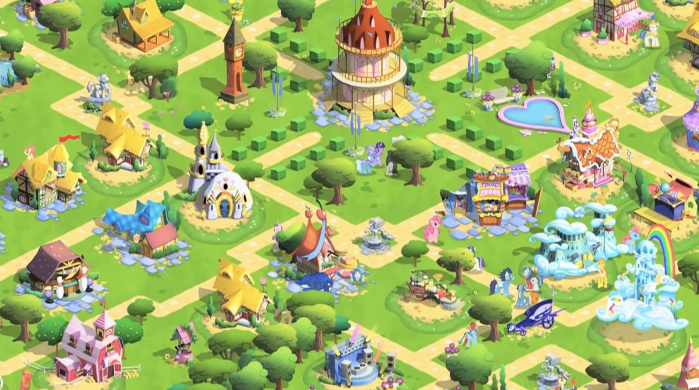
While at Gameloft as a Technical Artist, I helped release the official My Little Pony village building game for iOS using Gameloft's in-house engine and tooling. I was responsible for vfx and asset integration pipelines.
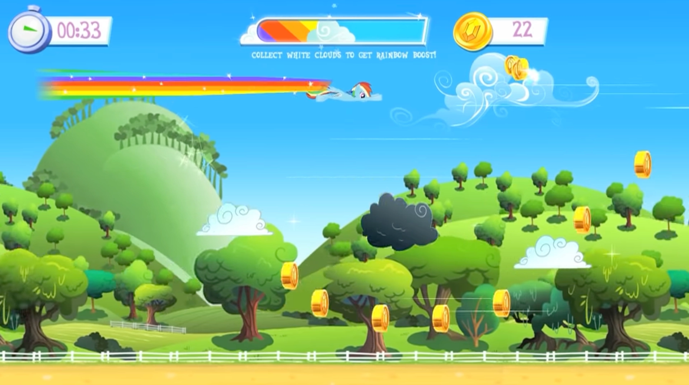
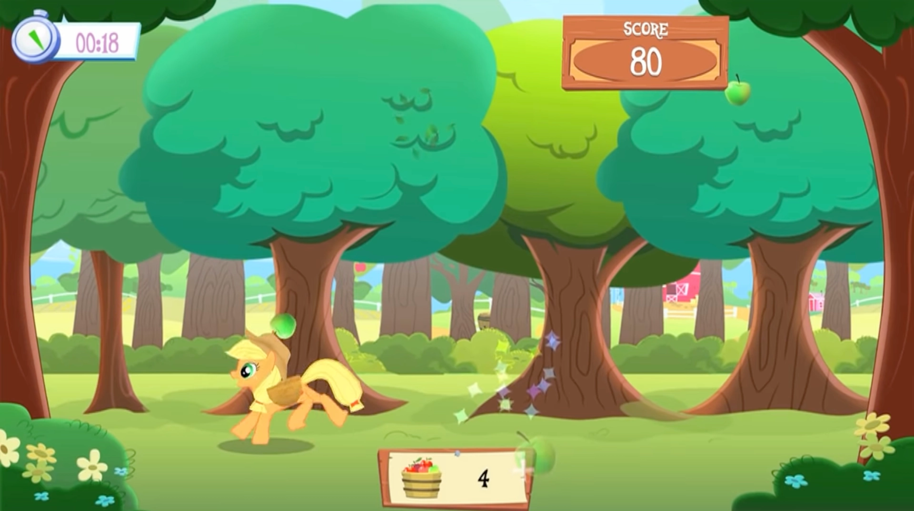
Gamejams
I occasionally participate in game jams to keep my skills sharp, to meet new people and get spontaneously creative.
Zero King
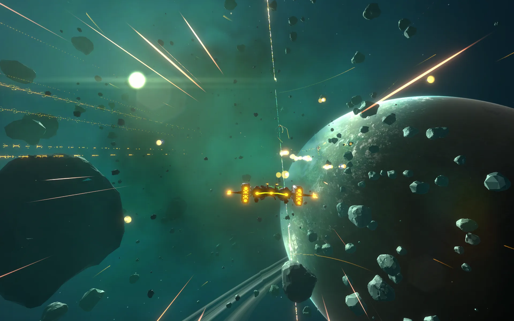
I was a Technical Artist at Zero King, a studio with their first self-titled online competitive space shooter Zero King
I was responsible for defining the early alpha stage visual design and realtime rendering techniques, visual effects and environment lighting for combat alpha. Zero King was build using Unity3D engine, using Universal Rendering Pipeline during my tenure.
Ice Age Adventures
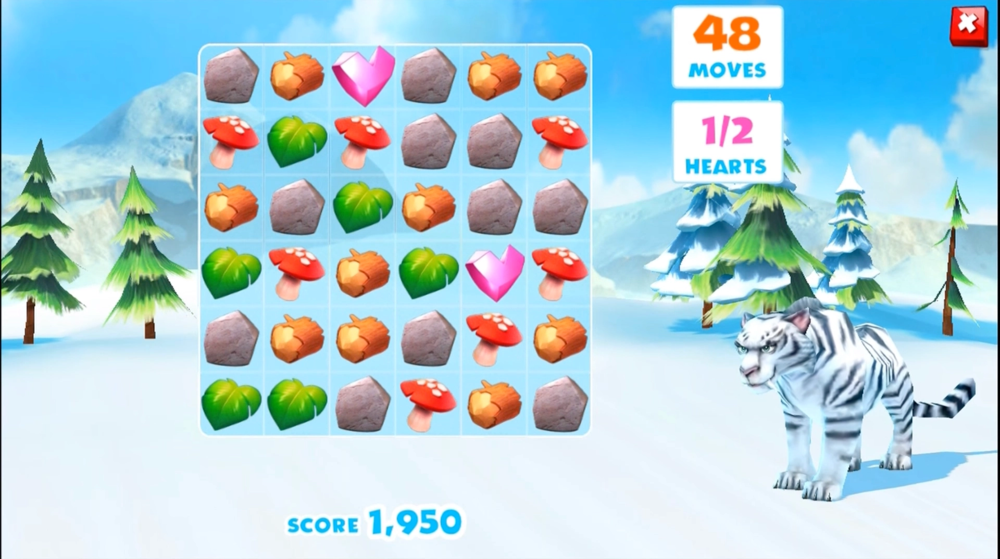
While at Gameloft as a Technical Artist, I helped release the official Ice Age village building game for iOS using Gameloft's in-house engine and tooling. I was responsible for vfx and asset integration pipelines.
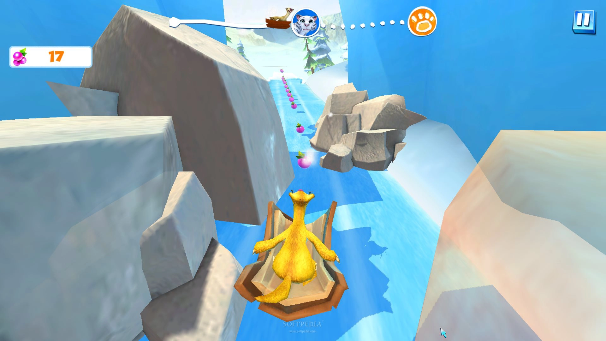
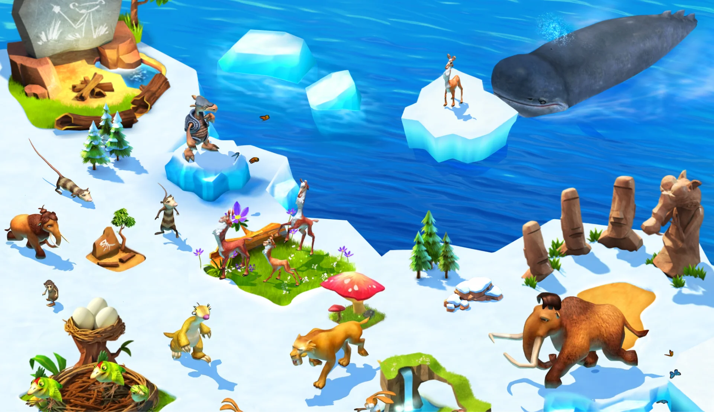
Remotely
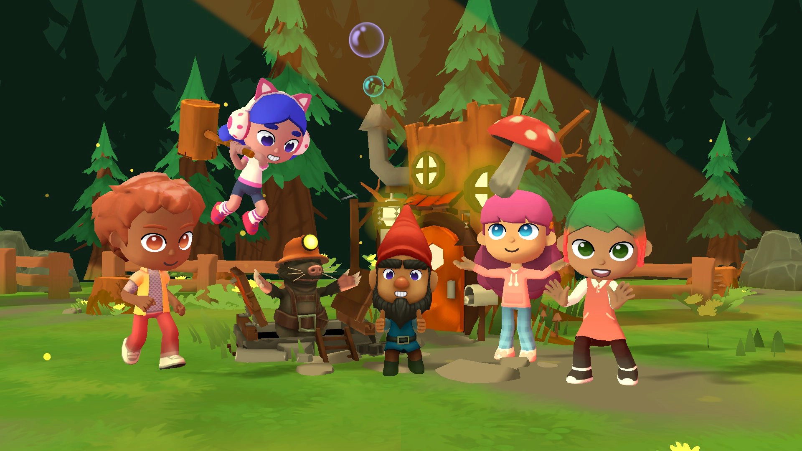
Remotely was an online-first company developing immersive communication tools with a goal of improving emotional wellbeing and engagement of workers in online meetings. I was a Lead Artist on the self-titled project, a realtime 3D online web platform and meeting tool.
Remotely was built using Unity3D and deployed on the web using WebGL. It was a challenging project from a technical perspective. Unity's WebGL deployment was buggy and underdeveloped at the time and there were huge compatibility and optimizations issues across platforms and browsers.
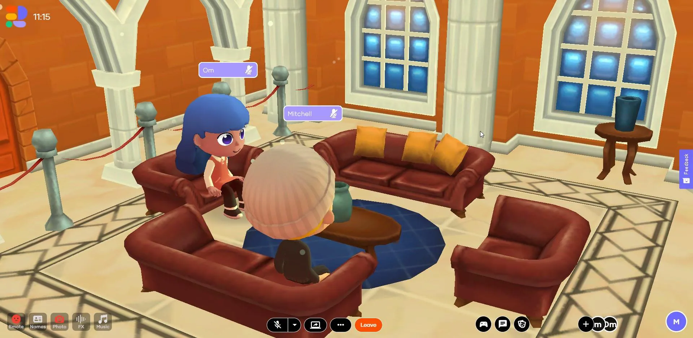
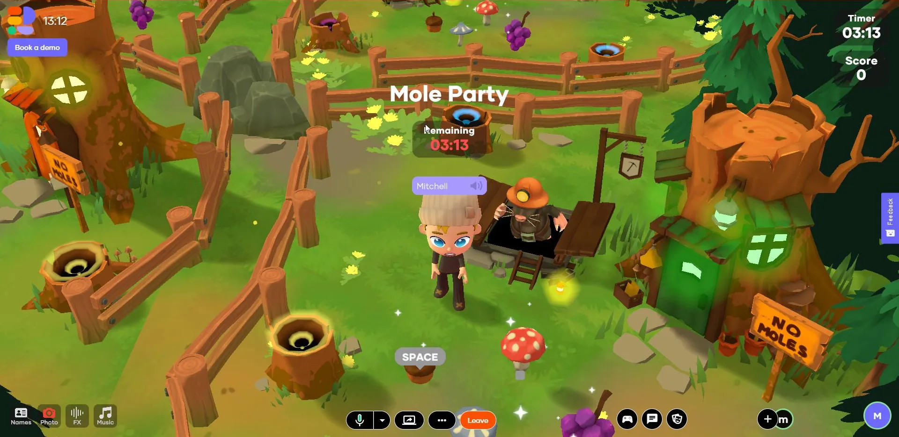
Swordy
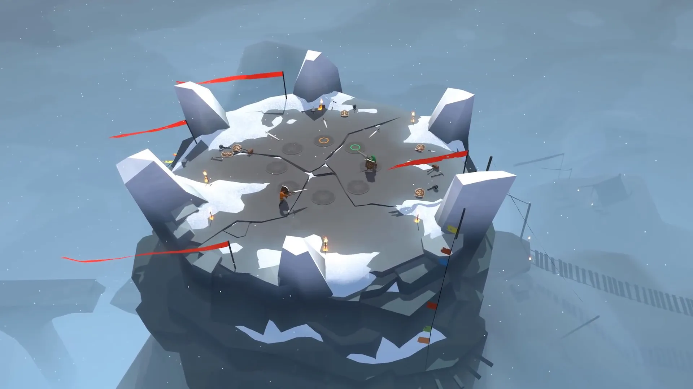
Swordy is a local-multiplayer physics based brawler, A game I worked on as part of an indie studio I co-founded called (frogshark)[frogshark]. I was involved from conception in 2014 until late 2016, responsible for some 3D and technical art, level design, sound design, dynamic soundtrack, marketing materials, video editing among other things.
It was made available on Steam Early Access, but is not finished, nor supported since the dissolution of the indie studio.
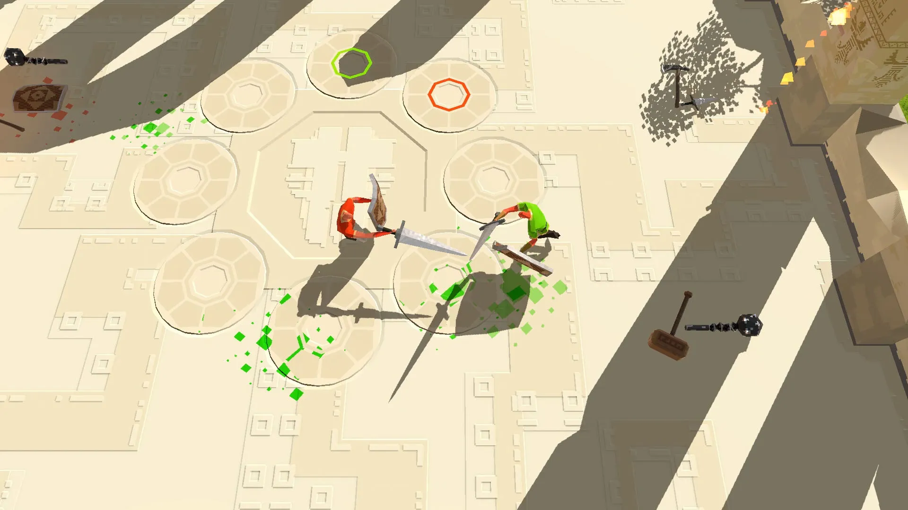
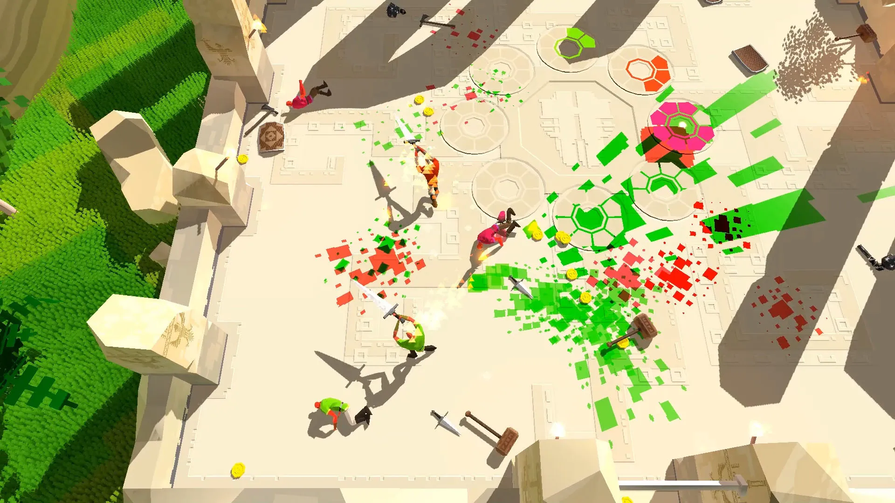
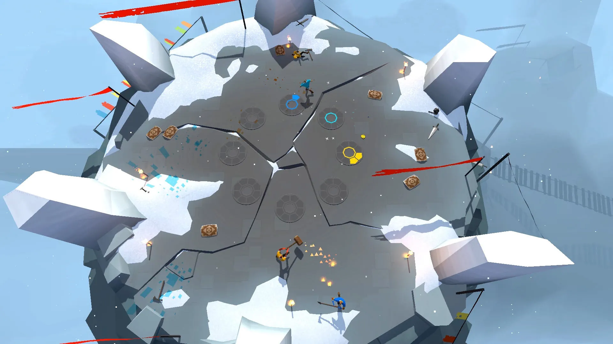
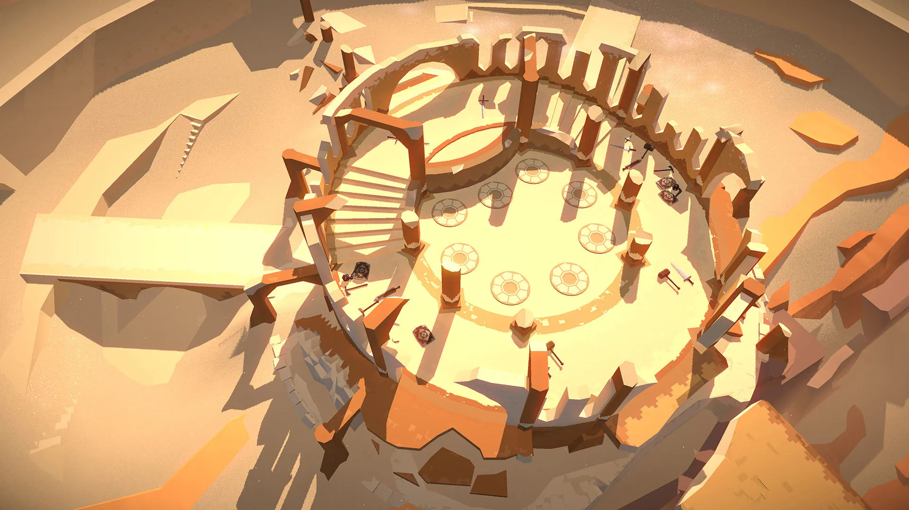
Shaders
Shader experiments.